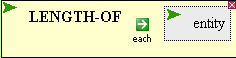
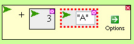
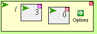

When Things Go Wrong
Sometimes when using the VPL you will encounter an error pop up window.
That's okay, we'll talk about them here.
The following piece of code has no arguments:

so executing it results in an error:
Ruh Roh. User error...
You are trying to evaluate code that is not completed!
One or more components of the code still need to be filled in.
Please fill in the missing components, then try again.
Simply fill in the the empty holes -- marked by a dashed border --
and then execute the code.
Some functions will accept arguments only of certain types.
Trying to pass a string to the + function...

...results in an error:
Ruh Roh. User error...
Cannot insert "A" here!
Only values of type NUMBER are allowed.
There are also mathematical errors, such as dividing by zero

which results in the error:
<<< Evaluation failed. Actual error: >>>
<<< Attempt to divide 3 by zero.>>>